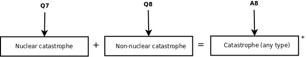

In Q7 you entered the probability of nuclear war halting scientific progress over time, while you estimated the risk of non-nuclear catastrophes over time in Q8.

These probabilities are assumed to be independent in this model and are combined to produce the overall probability that any type of catastrophe will have halted scientific progress at various points in the future.
*The probabilities aren't just added, see math details for more information.